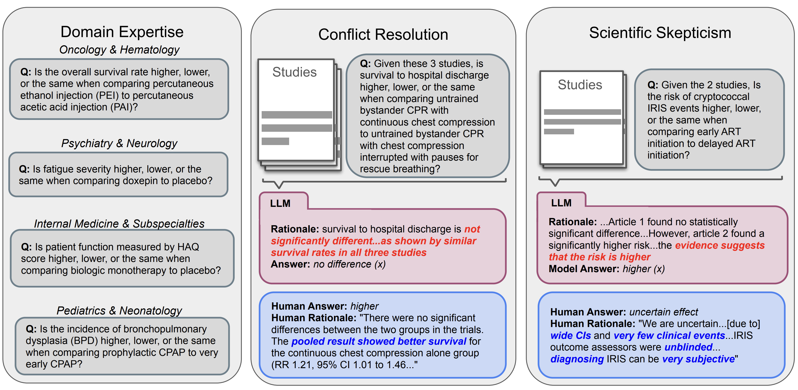

|
Alejandro Lozano 
I am a PhD candidate at the Stanford Artificial Intelligence Laboratory (SAIL) working on vision-language foundation models. I'm fortunate to be advised by Serena Yeung-Levy and to be supported by the Arc Institute. I am deeply grateful to NVIDIA, Amazon, and HAI for generously funding my research. I also work part time at Microsoft Research under the supervision of Hoifung Poon (hosted by Jeya Maria Jose ) and I am an editor of multimodal AI for scientfic resarch chapter for the AI Index. My work focuses on multimodal learning, multimodal retrieval-augmentation, agent-based systems, and the intersection of those topics with real-world applications, with an emphasis on precision medicine. During my free time, I like to hike around the bay area, play guitar, and meditate. |
|
Recent News
- [Jan 2026] 1 paper accepted to ICLR 2026, see you in Brazil.
- [Dec 2025] 1 paper accepted to EURIPS 2025, see you in Copenhagen.
- [June 2025] I am interning at Microsoft Research.
- [March 2025] Awarded Nvidia grant.
- [February 2025] 3 papers accepted to CVPR 2025.
- [January 2025] 2 papers accepted to ICLR 2025
- [December 2024] 1 paper accepted to NEJM AI.
- [September 2024] 1 paper accepted to NeurIPS 2024.
Selected Publications(*) denotes co-first authorship. For a full list of publications, please check my Google Scholar |

|
BIOMEDICA: An Open Biomedical Image-Caption Archive, Dataset, and Vision-Language Models Derived from Scientific Literature
Alejandro Lozano *, Min Woo Sun*, James Burgess*, Liangyu Chen, Jeffrey J. Nirschl, Jeffrey Gu, Ivan Lopez, Josiah Aklilu, Anita Rau, Austin Wolfgana Katzer, Collin Chiu, Xiaohan Wang, Alfred Seunghoon Song, Robert Tibshirani, Serena Yeung-Levy CVPR 2025 project page / paper / code / data We introduce BIOMEDICA, a framework to transform PMC-OA into a comprehensive dataset of over 24 million image-text pairs with expert-guided annotations, enabling the training of state-of-the-art biomedical vision-language models across diverse tasks and domains. |
|

|
Can Large Language Models Match the Conclusions of Systematic Reviews?
Christopher Polzak*, Alejandro Lozano *, Min Woo Sun*, James Burgess, Yuhui Zhang, Kevin Wu, Serena Yeung-Levy TBD 2025 project page / paper / code / data Can LLMs match the conclusions of systematic reviews written by clinical experts when given access to the same studies? To explore this question, we present MedEvidence, A human-curated benchmark of 284 questions (from 100 open-access SRs) across 10 medical specialties. |

|
MicroVQA: A Multimodal Reasoning Benchmark for Microscopy-Based Scientific Research
James Burgess*, Jeffrey J Nirschl*, Laura Bravo-Sánchez*, Alejandro Lozano, Sanket Rajan Gupte, Jesus G. Galaz-Montoya, Yuhui Zhang, Yuchang Su, Disha Bhowmik, Zachary Coman, Sarina M. Hasan, Alexandra Johannesson, William D. Leineweber, Malvika G Nair, Ridhi Yarlagadda, Connor Zuraski, Wah Chiu, Sarah Cohen, Jan N. Hansen, Manuel D Leonetti, Chad Liu, Emma Lundberg, CVPR 2025 paper / data MicroVQA is an expert-curated benchmark for research-level reasoning in biological microscopy. We also propose a method for making multiple-choice VQA more challenging. |

|
Time-to-Event Pretraining for 3D Medical Imaging
Zepeng Huo*,, Jason Alan Fries*, Alejandro Lozano *, Jeya Maria Jose Valanarasu, Ethan Steinberg, Louis Blankemeier, Akshay S. Chaudhari, Curtis Langlotz, Nigam H. Shah ICLR 2025 paper We propose the first time-to-event pretraining framework for 3D medical imaging models that leverages large-scale temporal supervision from paired longitudinal electronic health records. |

|
Video Action Differencing
James Burgess, Xiaohan Wang, Yuhui Zhang, Anita Rau, Alejandro Lozano, Lisa Dunlap, Trevor Darrell, Serena Yeung-Levy ICLR 2025 paper / data We propose Video Action Differencing (VidDiff), a new task aimed at detecting subtle differences in how actions are performed across pairs of videos. To support this task, we introduce a benchmark spanning a diverse set of skilled actions, along with a baseline and agentic workflow to investigate the limitations of current VLMs. |

|
Micro-Bench: A Vision-Language Benchmark for Microscopy Understanding
Alejandro Lozano *, Jeffrey Nirschl*, James Burgess, Sanket Rajan Gupte, Yuhui Zhang, Alyssa Unell, Serena Yeung-Levy NeurIPS 2024 project page / paper / code / data A Vision-Language Benchmark for Microscopy Understanding, featuring 17,000 microscopy images sourced from 24 publicly available datasets. As the most diverse microscopy benchmark to date, it spans light (LM), fluorescence (FM), and electron microscopy (EM) across 8 sub-modalities, 91 distinct cell, tissue, and structure types, and 24 staining techniques. Microbench supports tasks including closed-form visual question answering (VQA), object detection, and segmentation. |

|
Medalign: A clinician-generated dataset for instruction following with electronic medical records
Scott L Fleming*, Alejandro Lozano*, William J Haberkorn*, Jenelle A Jindal*, Eduardo Reis*, Rahul Thapa, Louis Blankemeier, Julian Z Genkins, Ethan Steinberg, Ashwin Nayak, Birju Patel, Chia-Chun Chiang, Alison Callahan, Zepeng Huo, Sergios Gatidis, Scott Adams, Oluseyi Fayanju, Shreya J Shah, Thomas Savage, Ethan Goh, Akshay S Chaudhari, Nima Aghaeepour, Christopher Sharp, Michael A Pfeffer, Percy Liang, Jonathan H Chen, Keith E Morse, Emma P Brunskill, Jason A Fries, Nigam H Shah AAAI 2024 / ML4H 2023 (Best Paper Award) project page / paper / code / data We introduce MedAlign, a benchmark of 983 natural language instructions about EHR data. MedAlign is curated by 15 clinicians (7 specialities), includes human-written reference responses, and provides 276 full longitudinal EHRs for grounding instruction-response pairs. |

|
Clinfo. ai: An open-source retrieval-augmented large language model system for answering medical questions using scientific literature
Alejandro Lozano, Scott L Fleming, Chia-Chun Chiang, Nigam Shah Pacific Symposium on Biocomputing 2024 (Oral) paper / code Introducing Clinfo.ai, the first open-source agentic system designed to answer medical questions using scientific literature. Clinfo.ai employs a chain of large language models to convert a question into a query and explore the most relevant literature to provide an up-to-date answer. |

|
Orientation-invariant autoencoders learn robust representations for shape profiling of cells and organelles
James Burgess, Jeffrey J. Nirschl, Maria-Clara Zanellati, Alejandro Lozano, Sarah Cohen, Serena Yeung-Levy Nature Communications 2024 paper / code Unsupervised shape representations of cells and organelles are often erroneously sensitive to image orientation. We introduce O2VAE, an orientation-invariant autoencoder that mitigates this issue by using equivariant convolutional network encoders. |
Teaching
|
|
I stole this website template from Jon Barron who published his source code here. |
Visitor MapSee where visitors are coming from around the world 0 unique locations visited |